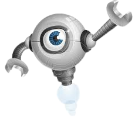
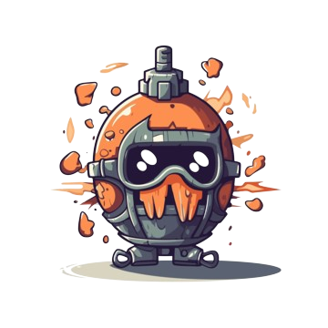
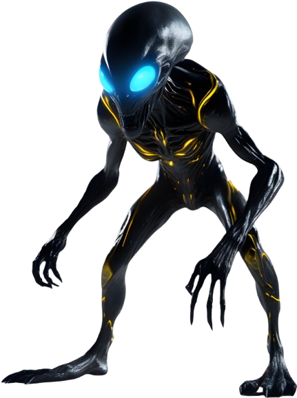

01
Space Tower Defense
A lane-based tower defense game in Java. Robot defenders hold off waves of alien invaders.



UIUC · Statistics & CS · data science
I'm a first-year at the University of Illinois Urbana-Champaign. I'm most comfortable in Python and Java, I'm most interested in data science, and I'm open to software engineering roles too.
I study Statistics & Computer Science at UIUC as part of the James Scholar Honors Program. Most of what I've built so far is Java: games and simulations with a lot of moving objects. Lately I've been pulling toward data. This semester I'm on a Data Science Club team looking at what a four-point line would mean for NBA shooters, and I've started a project tracking how reliable Champaign's buses actually are.
Before college I mentored elementary schoolers through Computer Science Kids, tutored high school students in math, and ran track. I've also packed meals with Kids Against Hunger since 2016. When I'm not at a keyboard I'm usually at the gym, playing sports, listening to music, or cooking.
Sep 2023 – Dec 2025
Taught intro computer science to classes of 15+ elementary school students.
Sep 2025 – Jan 2026
Tutored high school students twice a week in everything from geometry to calculus.
01
A lane-based tower defense game in Java. Robot defenders hold off waves of alien invaders.



02 · UIUC Data Science Club · team project · Fall 2026
A Data Science Club team project on a hypothetical NBA four-point line, using five seasons of shot-distance data for the league's top 3-point shooters.
| Distance | Made | Attempted | 3P% |
|---|---|---|---|
| 22 ft | 2,990 | 7,101 | 42.1% |
| 23 ft | 5,639 | 13,307 | 42.4% |
| 24 ft | 6,425 | 16,178 | 39.7% |
| 25 ft | 13,544 | 35,132 | 38.6% |
| 26 ft | 10,611 | 28,183 | 37.7% |
| 27 ft | 5,160 | 14,114 | 36.6% |
| 28 ft | 2,362 | 6,581 | 35.9% |
| 29 ft | 1,157 | 3,468 | 33.4% |
| 30 ft | 581 | 1,875 | 31.0% |
| 31 ft | 280 | 981 | 28.5% |
| 32 ft | 183 | 548 | 33.4% |
| 33 ft | 96 | 309 | 31.1% |
03
Connect 4 with a shop and special pieces: bombs, line-clearers, and an infection piece that spreads across the board.
04 · Playable in the browser
A top-down space shooter that runs in the browser: four waves, a boss with an 8-way fireball attack, and timed power-ups.

City-builder simulation where workers walk between homes, factories and resources while earthquakes and alien invasions hit.
Building and Person class hierarchies, a nearest-resource search that expands outward square by square, and repair crews sent to broken buildings.
Early-stage Python project to collect Champaign-Urbana MTD real-time bus data and measure how reliable routes actually are.
Phase 1 of 5, the project skeleton, is in place: validated config loading (reports every problem at once and rejects placeholder values), UTC rotating-file logging, pytest tests, and CI with ruff on GitHub Actions. Next up: the GTFS-Realtime feed collector.
Console basketball manager: build a team, play seven opponents, and upgrade players with your winnings.
Seven-stat player model rolled into a team rating, a stat store, opponents that improve over time, random events, and PrettyTable output.
No projects with that tag.
Expected May 2030
James Scholar Honors Program · GPA 4.0 / 4.0
Coursework: Programming in Java, Data Analysis & Visualization, Calculus sequence
May 2026
GPA 4.0 unweighted
Illinois State Scholar · National Merit Commended Scholar · Seal of Biliteracy (Spanish)
Fall 2026
Team project analyzing a hypothetical NBA four-point line with five seasons of shot-distance data.
2016 – present
Monthly meal-packing for 10+ years. I set up logistics for the annual 5K charity run and onboard new volunteers.
2022 – 2025
Competed in 2–3 events per meet across three winter and spring seasons, and recruited 5+ new athletes when the roster was short.
I'm looking for data science and software engineering internships, and I'm happy to talk about club projects too. Email is the fastest way to reach me.